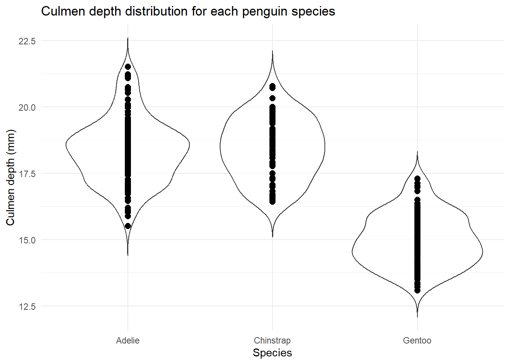
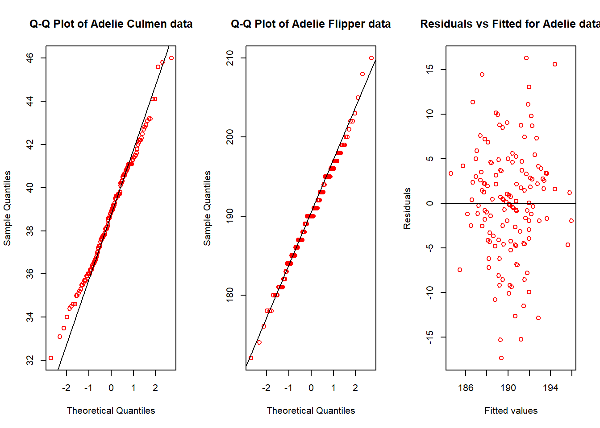

Y3 Reproducible figures assignment
Question 1: Data visualisation for science communication
Question 1a: Bad figure
Question 1b: Write about how your design choices mislead the reader about the underlying datas.
There are 4 main ways that my design choice mislead the reader about the data.
Firstly, the data points aren’t jittered which means that it’s difficult to visualise the density of the data points which is an important aspect of a violin plot which shows the density of culmen depth in this case for each species (Wicklin, 2011; Carron 2021).
Furthermore, the data points are opaque and linked to this, the size of the data points is quite big so this leads to overplotting where data points overlap, making it difficult to view individual data points and understand the actual distribution of culmen depth values for each species especially in the Gentoo species (Bock, 2018).
Moreover, the colour of the violin plot itself is white which matches the background of the graph, making it difficult to easily estimate the most frequent culmen depth value for each species.
Question 2: Data pipeline
Data preparation steps
Step 1: Load data - Load in the relevant packages and palmer penguin data set and save the raw data set.
#Load relevant libraries
library(tidyverse)
library(janitor)
library(here)
library(palmerpenguins)
library(ggplot2)
library(ragg)
library(svglite)
#This is the folder and R files where I've stored my functions for Q2.
source(here("functions", "cleaning.R"))
source(here("functions", "plotting.R"))
#Visualise raw data and save it
write_csv(penguins_raw, here("data", "penguins_raw.csv"))
head(penguins_raw)Step 2: Appropriately clean data - Cleaning function (“Cleaning_data”) is used to clean data by removing unnecessary columns as well as clean them (i.e removing empty rows/columns) and shortens the species names. Cleaned data using a function, because it allows for flexibility. We then save the cleaned version of the data. We save a raw version and clean version of the data, so all the changes are tracked and prevent us from changing the data directly with is not reproducible.
#create clean data set using function
penguins_clean <- cleaning_data(penguins_raw)
#saves clean data
write_csv(penguins_clean, here("data", "penguins_clean.csv"))
#Provides output detail of what the funct does
print("Removed empty rows, columns, cleaned column names, removed delta and comments columns, shortened species names")
#view clean data
penguins_cleanQ2: Data analysis - culmen length and flipper length
Introduction: I am looking to see if there is a relationship between culmen length and flipper length for each of the 3 species of penguin.
Null hypothesis: There is no statistically significant relationship between culmen length and flipper length for each of the three species.
Alternative hypothesis: There is a statistically significant relationship between culmen length and flipper length for each of the three species.
Exploratory figure of culmen and flipper lengths for each species using function ‘plot_scatterplot’:
source(here("functions","plotting.R"))
#Creates scaterplot using function from file above
flipper_culmen_scatterplot <- plot_scatterplot(penguins_clean, culmen_length_mm, flipper_length_mm,
"Culmen length (mm)", "Flipper length (mm)")
flipper_culmen_scatterplot These scatterplots show that the relationship between culmen length and flipper length is roughly linear for all three species, even though there is some noise in the data.
Save the explanatory figure as a PNG within the ‘figures’ subfolder:
agg_png("figures/penguin_scatterplot_default.png",
width = 20,
height = 20,
units = "cm",
res = 300,
scaling = 1)
print(flipper_culmen_scatterplot)
dev.off()Statistical methods and printing results figure: Pearson’s correlation coefficient
I chose Pearson’s correlation coefficient because I want to see if there’s a statistically significant relationship between two continuous variables (flipper length vs culmen length) for each of the 3 species.
To calculate the Pearson coefficient, I first need to subset the data for the variables we’re interested in (culmen and flipper lengths) and first test whether the data for each species fits the assumptions of the Pearson Correlation Coefficient.
#Subset penguin clean data according to species for the variables we're interested in - flipper/culmen length using function spp_subset_data
source(here("functions","testing.R"))
# Adelie subset data
adelie_subset_data <- spp_subset_data(penguins_clean, "Adelie")
# Chinstrap subset data
chinstrap_subset_data <- spp_subset_data(penguins_clean, "Chinstrap")
# Gentoo subset culmen and flipper data
gentoo_subset_data <- spp_subset_data(penguins_clean, "Gentoo")Above I showed that the data for each species follows the assumption of linearity based on the scatterplots.
The data also fulfills the assumption that the two variables are continuous.
Below I test for the other assumptions of the Pearson correlation test - normality, homoscedasticity, the presence of spurious outliers
Shapiro-Wilk normality test
data: adelie_subset_data$culmen_length_mm
W = 0.99289, p-value = 0.6848
Shapiro-Wilk normality test
data: adelie_subset_data$flipper_length_mm
W = 0.9934, p-value = 0.7427
Shapiro-Wilk normality test
data: chinstrap_subset_data$culmen_length_mm
W = 0.97525, p-value = 0.1941
Shapiro-Wilk normality test
data: chinstrap_subset_data$flipper_length_mm
W = 0.98891, p-value = 0.8106
Shapiro-Wilk normality test
data: gentoo_subset_data$culmen_length_mm
W = 0.97379, p-value = 0.01989
Shapiro-Wilk normality test
data: gentoo_subset_data$flipper_length_mm
W = 0.96148, p-value = 0.00176By testing for the assumptions of the pearson correlation test, the Adelie data fits normality as it has the QQ-plots follow a roughly 45 degree angle along the line. This is supported by the p-value of the Shapiro-Wilks test results for culmen length and flipper length (0.68 and 0.74, respectively). There’s also random scattering of the residuals on the residuals vs fitted values graph suggesting homoscedasticity. Although there are two outliers in the flipper data for the Adelie species (172mm, 210mm) as seen in the flipper boxplot I have decided to keep them in because I believe they are part of the natural variation rather than being outliers when looked at in comparison to the rest of the Adelie flipper data.
The Chinstrap data fits normality as its QQ-plots also suggest that the data follows a normal distribution, with some curving at either end of the distribution in the case of the Chinstrap culmen data. This is supported by the p-value of the Shapiro-Wilk test results for culmen and flipper lengths (0.19 and 0.81 respectively). Furthermore the random scattering of residuals on the residuals vs fitted values graph suggests there’s homoscedasticity.
The Gentoo data shows homoscedasticity with random scattering of residuals. The flipper length data looks roughly normal, with some slight deviations at the tails as seen in the previous species data. The QQ-plot for Gentoo culmen data for most part lies quite well against the line, except for the top tail, which has a deviation. This may be due to the outlier value (59.6mm) as visualised in the Gentoo culmen length boxplot, however, when looked in light of the rest of the culmen data, I believe this value is natural variation rather than an outlier. This may explain the non-significant result of the Shapiro-Wilks test for Gentoo culmen length data - 0.01. The Shapiro-Wilks test for Gentoo flipper data also suggest that it’s not normal, however, the qqplot looks normal and isn’t too disimilar from the other QQ-plots produced, and so I suggest that this non-significant result was due to the high sensitivity of the Shapiro-Wilks test to deviations in normality especially in a large sample size such as this data (119 measured individuals).
Performing pearson correlation for each species:
# Adelie pearson coefficient
adelie_pearson_coeff <- cor.test(adelie_subset_data$culmen_length_mm, adelie_subset_data$flipper_length_mm, method = "pearson")
# Chinstrap pearson coefficient
chinstrap_pearson_coeff <- cor.test(chinstrap_subset_data$culmen_length_mm, chinstrap_subset_data$flipper_length_mm, method = "pearson")
# Gentoo pearson coefficient
gentoo_pearson_coeff <- cor.test(gentoo_subset_data$culmen_length_mm, gentoo_subset_data$flipper_length_mm, method = "pearson")
# Print the pearson correlation coefficient for each species
adelie_pearson_coeff
Pearson's product-moment correlation
data: adelie_subset_data$culmen_length_mm and adelie_subset_data$flipper_length_mm
t = 4.2275, df = 144, p-value = 4.178e-05
alternative hypothesis: true correlation is not equal to 0
95 percent confidence interval:
0.1795153 0.4693861
sample estimates:
cor
0.332274 chinstrap_pearson_coeff
Pearson's product-moment correlation
data: chinstrap_subset_data$culmen_length_mm and chinstrap_subset_data$flipper_length_mm
t = 4.3449, df = 66, p-value = 4.916e-05
alternative hypothesis: true correlation is not equal to 0
95 percent confidence interval:
0.2627236 0.6382640
sample estimates:
cor
0.4716073 gentoo_pearson_coeff
Pearson's product-moment correlation
data: gentoo_subset_data$culmen_length_mm and gentoo_subset_data$flipper_length_mm
t = 9.6107, df = 117, p-value < 2.2e-16
alternative hypothesis: true correlation is not equal to 0
95 percent confidence interval:
0.5499595 0.7540510
sample estimates:
cor
0.6642052 Saving the results figure: Create a text file that saves the output of the statistical tests for all three species.
#Title of file
cat("Tests output", file = "tests.txt")
#Adds blank line in text document
cat("\n\n", file = "tests.txt", append = TRUE)
#Writes adelie pearson correlation test to text file
cat("Adelie Pearson correlation test", file = "tests.txt", append = TRUE)
capture.output(adelie_pearson_coeff, file = "tests.txt", append = TRUE)
#blank line
cat("\n\n", file = "tests.txt", append = TRUE)
#Adds chinstrap pearson correlation test to text file
cat("Chinstrap Pearson correlation test", file = "tests.txt", append = TRUE)
capture.output(chinstrap_pearson_coeff, file = "tests.txt", append = TRUE)
#blank line
cat("\n\n", file = "tests.txt", append = TRUE)
#Adds gentoo pearson correlation test to text file
cat("Gentoo Pearson correlation test", file = "tests.txt", append = TRUE)
capture.output(gentoo_pearson_coeff, file = "tests.txt", append = TRUE)Results
In all three species there is a statistically significant relationship between culmen length and flipper length.
In Adelie penguins there’s a correlation coefficient of 0.33, so there’s a moderately positive correlation between culmen and flipper lengths with a p value of 4.18x10-5 which is smaller than the significance value of 0.05, so we can reject the null hypothesis. Thus there’s a statistically significant relationship between culmen and flipper lengths for Adelie penguins. This is supported by the confidence interval which is 0.18 – 0.47, and as it doesn’t include 0 this supports the significance of our correlation coefficient.
In Chinstrap penguins there’s a correlation coefficient of 0.47 so a moderate to strong positive correlation between culmen and flipper lengths with a p value of 4.92x10-5 which is smaller than the significance value of 0.05, so we can reject the null hypothesis. Thus there’s a statistically significant relationship between culmen and flipper lengths for Chinstrap penguins. This is supported by the confidence interval which is 0.26 – 0.64, and as it doesn’t include 0 this supports the significance of our correlation coefficient.
In Gentoo penguins there’s a correlation coefficient of 0.66 so a strong positive correlation between culmen and flipper lengths with a p value of 2.2x10-16 which is smaller than the significance value of 0.05, so we can reject the null hypothesis. Thus there’s a statistically significant relationship between culmen and flipper lengths for Gentoo penguins. This is supported by the confidence interval which is 0.55 – 0.75, and as it doesn’t include 0 this supports the significance of our correlation coefficient.
Discussion
I find that there is a statistically significant relationship between culmen length and flipper length for all three species investigated (Adelie, Chinstrap, Gentoo). This suggests that these two anatomical features are coupled, and that there’s a favourable range of length values that one of these features can take given the length of the other feature. This could potentially be because of adaptations to the environment and for swimming, catching and eating specific prey items – in this scenario there’s potential for convergent evolution towards this state due to similar selection pressures.
Alternatively, these two features could be evolutionary coupled in the last common ancestor of all three species, and this coupling remained advantageous for all three penguin species, because they live in same region and so all three species potentially face the same or similar selection pressures and so the coupling of these two morphological features remained.
To expand of this work, it would be interesting to assess the relationship between culmen length and flipper length at other life stages such as juvenile. The data set only consists of adult individuals and so we can not extrapolate this relationship to chicks and juveniles. There may be less of a relationship between culmen length and flipper length during young life stages because they don’t face the same selection pressures as they don’t actively swim and catch fish, but rather rely on their parents for food.
Furthermore, this study looks at three species in the same region, which could potentially explain why all species have a significant relationship between culmen and flipper lengths if these traits are determined in part by environmental selection pressures. But further work, could be see if this relationship is seen in these three species in other regions, to see if this relationship isn’t specific to the conditions of the region. And, more broadly, work into what the cause of this relationship between flipper and culmen lengths could yield insight into the evolution of the culmen and flippers.
Conclusion:
Overall, I found that there’s a statistically significant relationship between culmen length and flipper length for three penguin species – Adelie, Chinstrap, Gentoo. This could be due to the same/similar evolutionary selection pressures acting upon these two traits that means that it is advantageous for culmen lengths to take a certain range of values given the length of the flipper due to advantages this gives in regards to swimming and catching/eating prey. However, the cause of this relationship remains unknown from this analysis alone, and more work could look into whether this relationship remains statistically significant during other life stages and in populations from other regions.
Question 3: Open science
Q3a: Upload RProject to GitHub.
My GitHub link:
Q3c: My experience running their code.
Q3d: Reflection on my own code
Bibliography
Bock, T. (2018, September 21). What is Overplotting? Displayr. https://www.displayr.com/what-is-overplotting/
Carron, J. (2021, December 13). Violin plots 101: Visualizing distribution and probability density | mode. Mode.com. https://mode.com/blog/violin-plot-examples
Wicklin, R. (2011, July 6). To jitter or not to jitter: That is the question. The DO Loop. https://blogs.sas.com/content/iml/2011/07/06/to-jitter-or-not-to-jitter-that-is-the-question.html